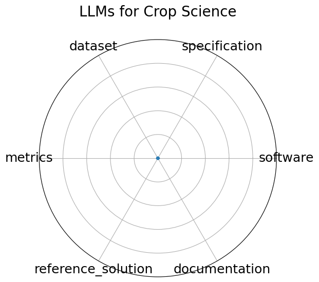

Edit: edit this entry
Date: 2024-12-13
Name: LLMs for Crop Science
Domain: Agricultural Science; NLP
Focus: Evaluating LLMs on crop trait QA and textual inference tasks with domain-specific prompts
Keywords: crop science, prompt engineering, domain adaptation, question answering
Task Types: Question Answering, Inference
Metrics: Accuracy, F1 score
Models: GPT-4, LLaMA-2-13B, T5-XXL
Citation:
Tingjia Shen, Hao Wang, Jiaqing Zhang, Sirui Zhao, Liangyue Li, Zulong Chen, Defu Lian, and Enhong Chen. Exploring user retrieval integration towards large language models for cross-domain sequential recommendation. 2024. URL: https://arxiv.org/abs/2406.03085, arXiv:2406.03085.
bibtex: ``` @misc{shen2024exploringuserretrievalintegration,
title={Exploring User Retrieval Integration towards Large Language Models for Cross-Domain Sequential Recommendation},
author={Tingjia Shen and Hao Wang and Jiaqing Zhang and Sirui Zhao and Liangyue Li and Zulong Chen and Defu Lian and Enhong Chen},
year={2024},
eprint={2406.03085},
archivePrefix={arXiv},
primaryClass={cs.LG},
url={https://arxiv.org/abs/2406.03085}, }
```
Ratings:
Software:
Rating: 0
Reason: This is a model, not a benchmark.
Specification:
Rating: 0
Reason: This is a model, not a benchmark.
Dataset:
Rating: 0
Reason: This is a model, not a benchmark.
Metrics:
Rating: 0
Reason: This is a model, not a benchmark.
Reference Solution:
Rating: 0
Reason: This is a model, not a benchmark.
Documentation:
Rating: 0
Reason: This is a model, not a benchmark.
Average Rating: 0.0
Radar Plot: 